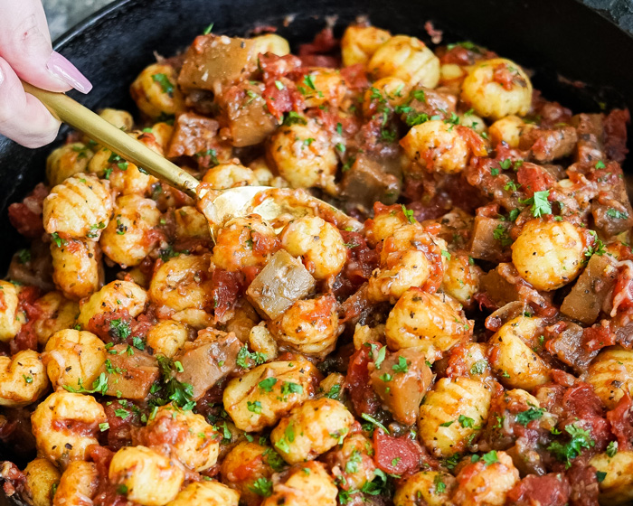

Gnocchi and sauce (vegan)

Description
This vegan gnocchi and sauce recipe uses only 11-ingredients & can be made in under 30-minutes. Using this recipe is super easy!
Ingredients
- 2 pkg gnocchi
- 2 tbsp olive oil
- 2 cloves garlic, crushed
- 1 tsp dried basil
- 1 can diced tomatoes
- ½ cup red wine or vegetable broth
- 1 medium eggplant or half large eggplant, peeled and cubed
- 0,25 tsp sea salt
- 0,25 black pepper
- Chopped parsley, to garnish
- Vegan parmesan, to serve
Steps
-
In a medium saucepan, heat oil over medium-high heat.
-
Add minced or crushed garlic, peeled & diced eggplant and dried basil. Cook while stirring for 3-5 min until the eggplant is soft.
-
Add the diced tomatoes, wine or vegetable broth, salt and pepper. Bring to boil. Reduce heat, cover and simmer for 15-20 mins, or until the sauce has reduced and thickened slightly.
-
Meanwhile, bring a pot of salted water to a boil, and cook the gnocchi according to package instructions.
-
Scoop out the gnocchi and add them to the sauce. Gently toss in the sauce until coated completely, add pasta water if you need to create a creaminess.
-
Sprinkle with vegan parmesan and parsley.